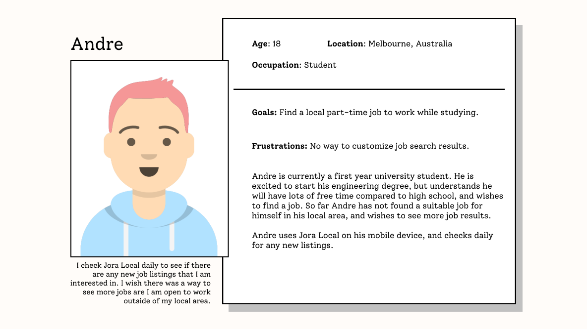
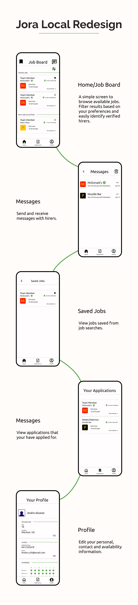

Jora Local is a job search platform created for job seekers to find local businesses to work for.
Jora Local is used from its website and mobile app. They provide features such as a job board, profile,
messaging and application tracking.
Project
Self–Initiated
Timeline
February 2023
Deliverables
Mobile Application Concept
Problem
Jora Local's app and website are both confusing and hard to use, with illogical information
architecture and stale design choices.
Goal
Redesign the user experience of the app and website to prioritize user goals, whilst refining IA to
simplify tasks.
Pain Points
Through user research the following user pain points were identified.
Job board hard to use. No search filters and ability to save jobs.
Unnecessary elements that distract users. 'Rate our App' and 'Did you Know?'
notifications cannot be dismissed.
Easy to find illegitimate jobs postings, applications result in no response.
Persona

Problem Statement
Andre is a student looking for part-time work so he can earn money and experience in his spare
time.
Solutions
Implement filters and search for job board
Create a verified feature for businesses to prove they are legitimate, avoiding
fake/suspicious job postings
Keep quick-view for job postings for easy browsing
Wireframes
Style Guide
Outcome

Takeaways
This project I experimented with card elements as a primary layout. Cards are efficient UX elements
as they section of content through the laws of proximity, common region and similarity.
I also aimed to try and keep elements from the original design, primarily keeping pages and the
availability feature. These features help reduce user pain points.